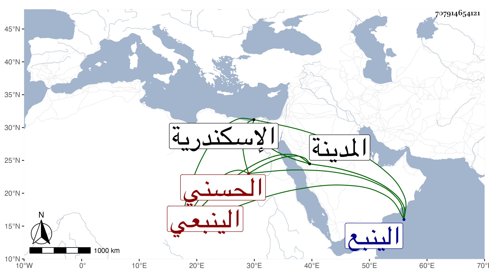

0902Sakhawi.DawLamic.ITO20230111-ara1.EIS1600.707914654121
Biography ID: 707914654121
919
سرداح بمهملات ويقال ان أوله صاد مهملة أيضا وهو في عقود المقريزي وهو أصح والسين أشهر بن مقبل بن نخبار بن مقبل بن محمد بن راجح بن إدريس بن حسن بن أبي عزيز الحسني الينبعي . ولي أبوه إمرة الينبع مدة ثم قبض عليه وحبس باسكندرية في سنة خمس وعشرين إلى أن مات بها وكحل ولده هذا فيقال إنه رأى النبي صلى الله عليه وسلم في المنام ومسح عينيه فأبصرواتهم السلطان من كحله فالله أعلم . مات في أواخر جمادى الآخرة سنة ثلاث وثلاثين بالطاعون قاله شيخنا في انبائه ويقال أنه أقام مدة أعمى بعد أن فقئت عيناه وسالتا وورم دماغه ونتن ثم توجه إلى المدينة فوقف عند القبر النبوي وشكا ما به وبات فرأى النبي صلى الله عليه وسلم فمسح بيده الشريفة على عينيه فأصبح وعيناه أحسن ما كانت وأن البينة أقيمت للأشرف بمشاهدة الميل المحمى بالنار وهو يكحل به بحيث سالت حدقتاه بحضورهم وكذا أخبر أمير المدينة بذلك والأمر أعظم من هذا فمن توسل بجنابه لا يخيب .
